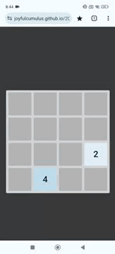
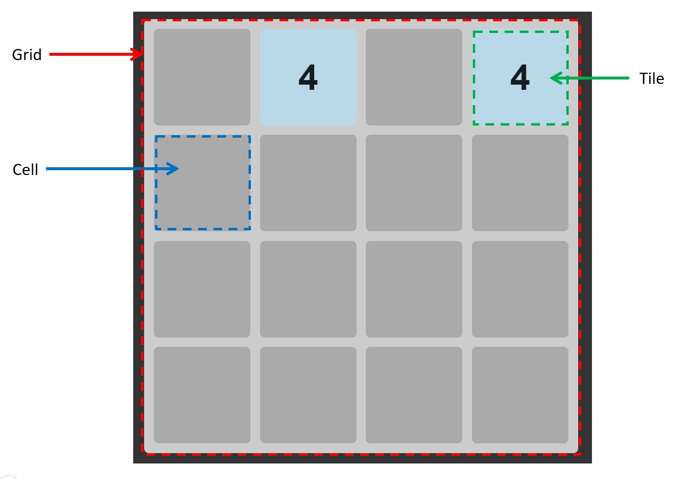
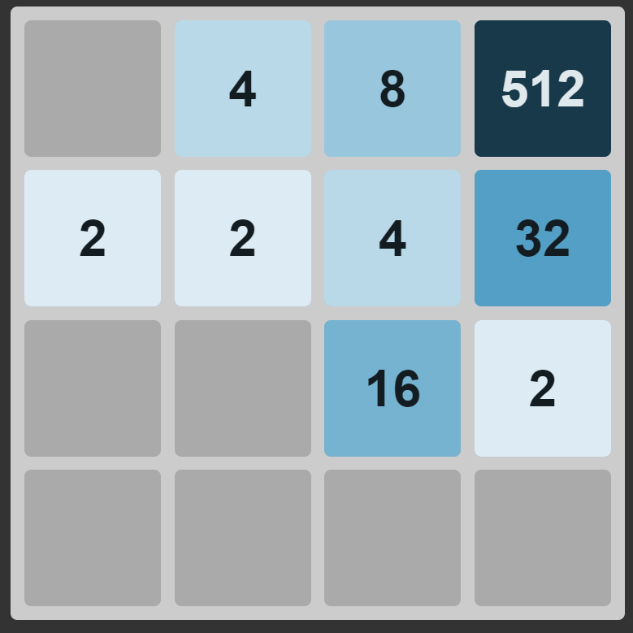

2048 Clone
Role: Solo Developer
Year: May 2024
Skills: HTML, CSS, JavaScript
Source: Github repository
About the Project
This is a clone of the popular 2048 puzzle game. I followed a tutorial to learn how an experienced developer would approach this development using pure JavaScript.
Other than what was taught in the tutorial, I added touchscreen capability to play this game on a mobile device.

Click here for app demo.
My Role
- Development and testing of application
Game Layout Design
This is an overview of how the tutorial structured the design of the 2048 game:
Gameboard: Grid and Cell classes
- Grid: a 2-dimension Cartesian plane. Stores information about Cells
- Cell: a specific (x,y) position on the grid. Stores information about what Tile is on the Cell, and whether there is another Tile to merge (i.e. mergeTile)
Player Resources: Tile class
- Contains a value (a number that represents its magnitude)
- Contains info about its position (x,y) on the gameboard

Interesting Learning Points
Use of setter to change colour of tile when its value updates
- When tile.value changes, the background and text lightness is adjusted based on the magnitude
- This is how the larger the magnitude, the darker the color of the tile

Use Async Function and Promises to allow CSS Transition to Complete
Problem: Need to ensure that all tiles finish sliding, before a new move from the player can be accepted
Solution accomplished in the tutorial:
- Use async…await in event handler function
- slideTiles function utilizes Promises.all() to ensure each tile's sliding animation finishes first
Problem Solving Highlights
Here, I will discuss the portion of the project that was unguided by the tutorial: how I added touchscreen capability.
Adding Touchscreen Capability
- Initialize variables that log the (x,y) of the start and end positions of the touch interaction
- Added "touchstart" and "touchend" event listeners, which are only invoked once per turn
- Calculate swipeDistanceX and swipeDistanceY using data in Step 1 to determine interaction direction
- To avoid moving tiles due to accidental touches, a swipeThreshold was introduced on the swipeDistance
Project Achievement
- Strengthened my knowledge of JavaScript classes, private methods, promises and CSS transitions.